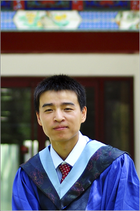

Curriculum Vitae [PDF]
Education
- 2011-present: Ph.D. student, Advisor: Prof. Zhengyu Liu
Atmospheric and Oceanic Sciences, UW-Madison, Madison, WI, USA - 2008-2011: Master of Science, Advisor: Prof. Haijun Yang
Atmospheric and Oceanic Sciences, Peking University, Beijing, China - 2004-2008: Bachelor of Science, Advisor: Prof. Haijun Yang
Atmospheric Sciences, Peking University, Beijing, China
Bio
I was born in Xinjiang province, around 20 miles to the northwestern border of China. Both my parents are farmers there. I wanted to become a scientist when I was a boy. I feel very lucky to be involved in climate science, not only because of the curiosity about the nature, but also its complexity, challenging and the benefits for our society.